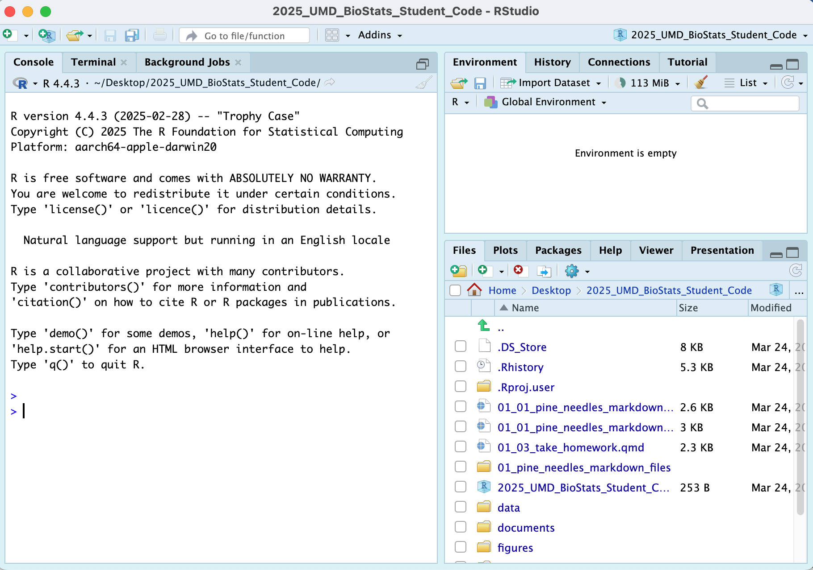
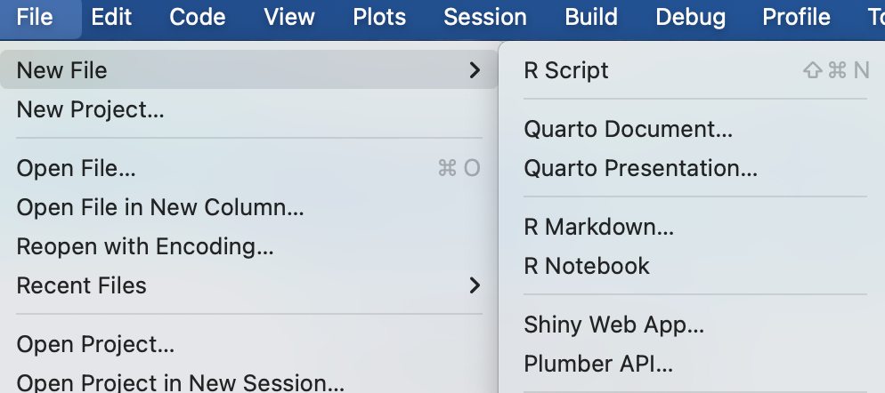
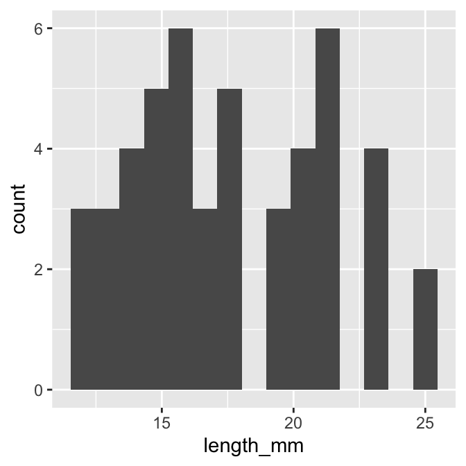
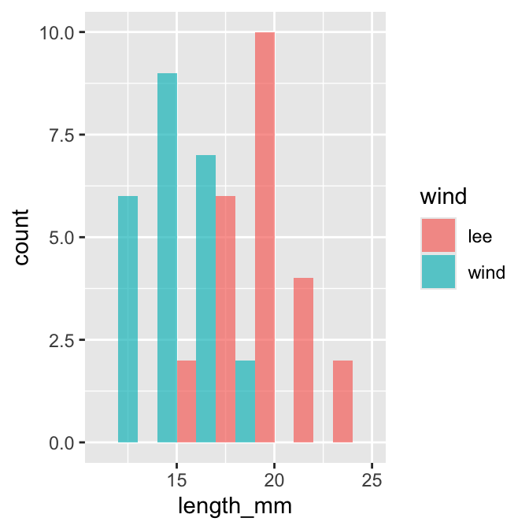
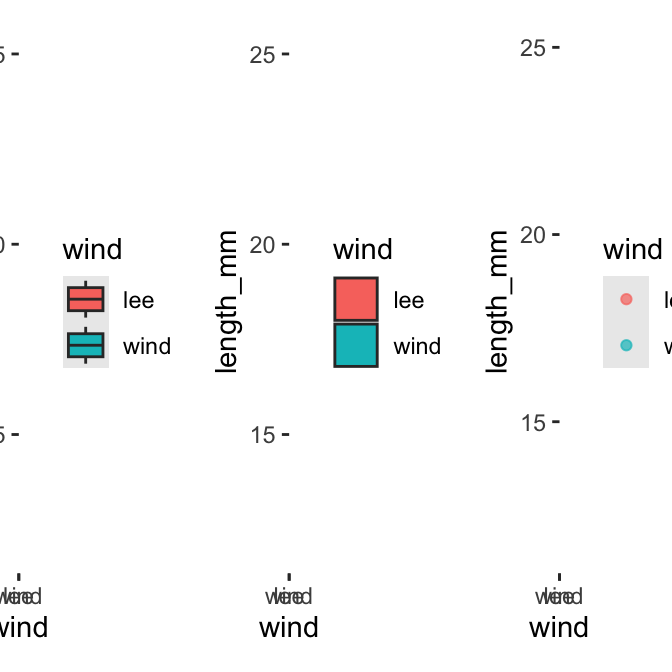
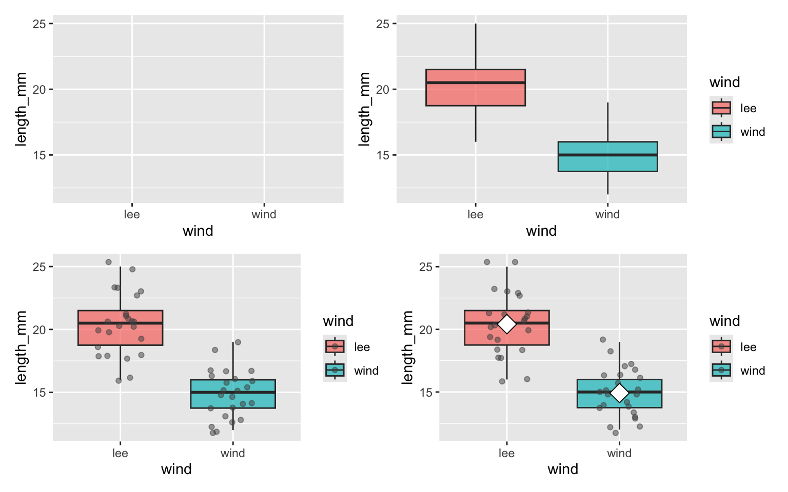
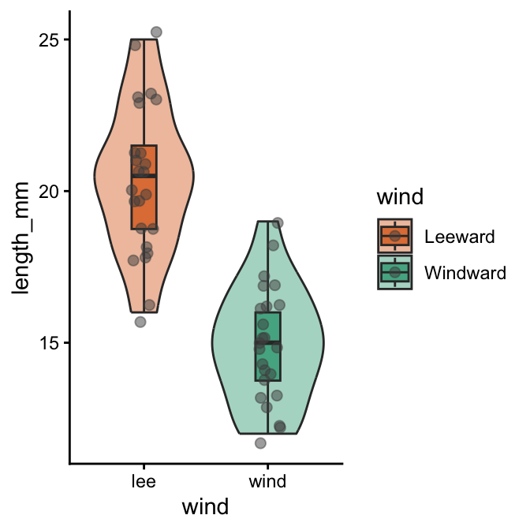
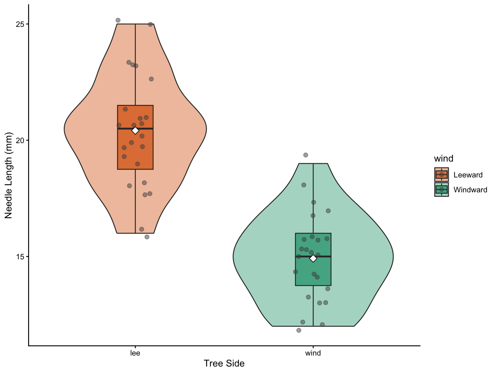
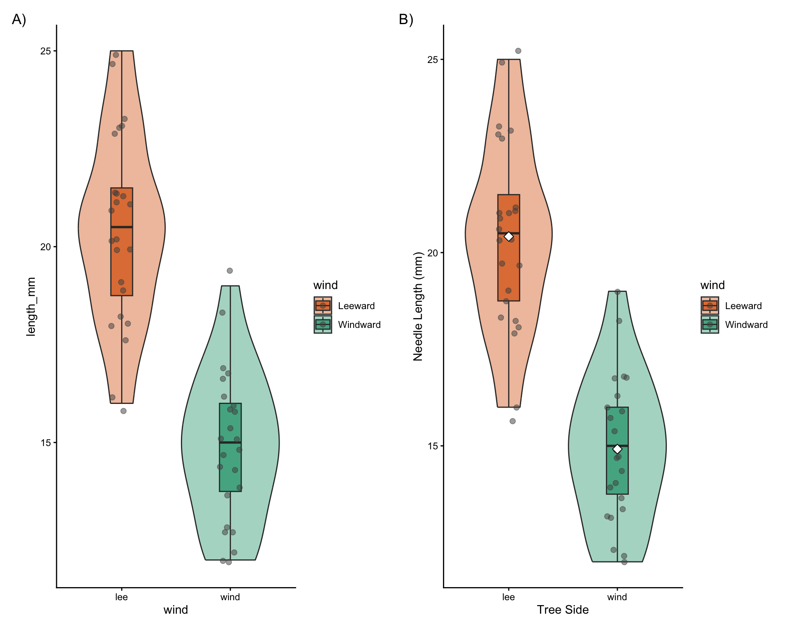

# install packages -----
# install.packages("readxl")
# install.packages("tidyverse")
# # we will install a few new libraries
# install.packages("skimr")Project Design & Graphing Data
Projects and ggplot
Hands-on activity: project setup and graphing with ggplot2.
In-class Activity 2: Data Visualization
Recap from Activity 1
- Collected pine needle samples from windward and leeward sides of trees
- Identified independent variable (wind exposure) and dependent variable (needle length)
- Measured needle lengths and recorded data
- Created basic visualizations
- Saved our data for further analysis
Today’s Objectives
- Implement data pipeline best practices
- Apply controlled vocabulary and naming conventions
- Create effective tables and visualizations
- Customize plots for publication quality
- Combine multiple plots into composite figures
Part 1: Setting Up Your Environment
- What data do we have
- what is the controlled vocabulary?
- are there units?
- What is the directory structure?
- Do we have a metadata file?
- Is the data entered in a tidy format?
- What are we missing?
Now lets create a new quarto file
- note I usually use this sort of system in an r_projects directory
- I have redone it for the class to organize all of the terms data
- you should try making some of your own projects

In RStudio:
- click
file-open projectand select the2025_UMD_BioStats_Student_Code.Rprojfile or double click on it in the finder or data explorer. - your screen will now change as RStudio knows where home is

Note that in the upper right you will see
2025_UMD_BioStats_Student_Codeso you know you are in the right spotNow click File - New File - Quarto File

Create a file that starts with
02_and then something that will help you know what is going on like02_class_activity_in_class.qmdNow this file thinks this is home.
So I usually copy stuff for the header from another file as its just too hard to remember all this…
---
title: "Title of your file" # Title of the file
author: "Your Name" # who you are
metadata-files:
- ../../_templates/lectures.yml
metadata-files:
- _templates/activities.yml
format:
html:
freeze: false
toc: false
default: true
embed-resources: true
self-contained: true
default: true
toc: false
toc-depth: 3
number-sections: false
highlight-style: github
reference-doc: ms_templates/custom-reference.docx
embed-resources: true
---Exercise 1: Now to load the libraries
Each script you run from then on you will load the libraries from within the package.
# Load the libraries ----
library(readxl) # allows to read in excel files
library(tidyverse) # provides utilities seen in console── Attaching core tidyverse packages ──────────────────────── tidyverse 2.0.0 ──
✔ dplyr 1.2.1 ✔ readr 2.2.0
✔ forcats 1.0.1 ✔ stringr 1.6.0
✔ ggplot2 4.0.3 ✔ tibble 3.3.1
✔ lubridate 1.9.5 ✔ tidyr 1.3.2
✔ purrr 1.2.2
── Conflicts ────────────────────────────────────────── tidyverse_conflicts() ──
✖ dplyr::filter() masks stats::filter()
✖ dplyr::lag() masks stats::lag()
ℹ Use the conflicted package (<http://conflicted.r-lib.org/>) to force all conflicts to become errorslibrary(skimr) # provide summary stats
library(janitor) # it cleans ; )
Attaching package: 'janitor'
The following objects are masked from 'package:stats':
chisq.test, fisher.testlibrary(patchwork)Exercise 2: Loading and Examining Data
Now like we did before with x and y we will do this with a spreadsheet from a CSV file or excel file
We are going to work with the same data we did in the last class.
# load file -----
# this file is in the data sub directory
# below put cursor between "" and click tab
# allows to to select the directory
# tab again and select the file
p_df <- read_csv("data/pine_needles.csv") # reads in csv fileRows: 48 Columns: 6
── Column specification ────────────────────────────────────────────────────────
Delimiter: ","
chr (4): date, group, n_s, wind
dbl (2): tree_no, length_mm
ℹ Use `spec()` to retrieve the full column specification for this data.
ℹ Specify the column types or set `show_col_types = FALSE` to quiet this message.# dataframe stored by "<-" reading in csv file in quotesExercise 3: Examining Data
# Load the pine needle data
p_df <- read_csv("data/pine_needles.csv", na = "NA")Rows: 48 Columns: 6
── Column specification ────────────────────────────────────────────────────────
Delimiter: ","
chr (4): date, group, n_s, wind
dbl (2): tree_no, length_mm
ℹ Use `spec()` to retrieve the full column specification for this data.
ℹ Specify the column types or set `show_col_types = FALSE` to quiet this message.# Examine the data structure
glimpse(p_df)Rows: 48
Columns: 6
$ date <chr> "3/20/25", "3/20/25", "3/20/25", "3/20/25", "3/20/25", "3/20…
$ group <chr> "cephalopods", "cephalopods", "cephalopods", "cephalopods", …
$ n_s <chr> "n", "n", "n", "n", "n", "n", "s", "s", "s", "s", "s", "s", …
$ wind <chr> "lee", "lee", "lee", "lee", "lee", "lee", "wind", "wind", "w…
$ tree_no <dbl> 1, 1, 1, 1, 1, 1, 1, 1, 1, 1, 1, 1, 2, 2, 2, 2, 2, 2, 2, 2, …
$ length_mm <dbl> 20, 21, 23, 25, 21, 16, 15, 16, 14, 17, 13, 15, 19, 18, 20, …# View the first few rows
head(p_df)# A tibble: 6 × 6
date group n_s wind tree_no length_mm
<chr> <chr> <chr> <chr> <dbl> <dbl>
1 3/20/25 cephalopods n lee 1 20
2 3/20/25 cephalopods n lee 1 21
3 3/20/25 cephalopods n lee 1 23
4 3/20/25 cephalopods n lee 1 25
5 3/20/25 cephalopods n lee 1 21
6 3/20/25 cephalopods n lee 1 16# Get a statistical summary
summary(p_df) date group n_s wind tree_no
Length :48 Length :48 Length :48 Length :48 Min. :1.00
N.unique : 1 N.unique : 4 N.unique : 2 N.unique : 2 1st Qu.:1.75
N.blank : 0 N.blank : 0 N.blank : 0 N.blank : 0 Median :2.50
Min.nchar: 7 Min.nchar: 5 Min.nchar: 1 Min.nchar: 3 Mean :2.50
Max.nchar: 7 Max.nchar:11 Max.nchar: 1 Max.nchar: 4 3rd Qu.:3.25
Max. :4.00
length_mm
Min. :12.00
1st Qu.:15.00
Median :17.50
Mean :17.67
3rd Qu.:20.25
Max. :25.00 Questions to Consider:
- What variables are in our dataset?
- What are their data types?
- Are there any missing values?
- Do the variable names follow consistent conventions?
- How might we improve the data organization?
Part 2: Basic Data Visualization
Let’s create some simple visualizations to explore our data:
Exercise 2: Creating a Histogram
# Create a basic histogram
p_df %>%
ggplot(aes(x = length_mm)) +
geom_histogram(bins = 15) 
# Create a histogram with color grouping
p_df %>%
ggplot(aes(x = length_mm, fill = wind)) +
geom_histogram(binwidth = 2, alpha = 0.7, position = "dodge") 
Key Insights from Histograms:
The histogram helps us understand: - The overall distribution of needle lengths - Potential differences between windward and leeward needles - Presence of any unusual values or outliers
Exercise 3: Creating Multiple Plot Types
Let’s explore different ways to visualize the same data:
# Box plot
box_plot <- p_df %>%
ggplot(aes(x = wind, y = length_mm, fill = wind)) +
geom_boxplot()
# Violin plot
violin_plot <- p_df %>%
ggplot(aes(x = wind, y = length_mm, fill = wind)) +
geom_violin()
# Dot plot
dot_plot <- p_df %>%
ggplot(aes(x = wind, y = length_mm, color = wind)) +
geom_jitter(width = 0.2, alpha = 0.7)
# Display all plots using patchwork
box_plot + violin_plot + dot_plot
Questions to Consider:
- Which plot type best reveals patterns in our data?
- What are the advantages and disadvantages of each plot type?
- How might we combine elements from different plot types?
Part 3: Building Complex Visualizations Layer by Layer
Now let’s build more sophisticated visualizations by adding layers one at a time:
Exercise 4: Building a Layered Plot
# Start with a basic plot
p1 <- p_df %>%
ggplot(aes(x = wind, y = length_mm, fill = wind))
# Add boxplot layer
p2 <- p1 +
geom_boxplot(alpha = 0.7)
# Add individual data points
p3 <- p2 +
geom_jitter(width = 0.2, alpha = 0.5, color = "gray30")
# Add mean indicators
p4 <- p3 +
stat_summary(fun = mean, geom = "point", shape = 23, size = 5, fill = "white")
# Create a 2x2 grid of the progressive plot building
(p1 | p2) / (p3 | p4)
Discussion Points:
- How does each layer contribute to the story our data is telling?
- Why might we want to show individual data points alongside summary statistics?
- How does transparency (alpha) help when overlaying multiple elements?
Part 4: Customizing Plots for Publication
Exercise 5: Adding customization
# Create a fully customized plot
color_plot <- p_df %>%
ggplot(aes(x = wind, y = length_mm, fill = wind)) +
# Add violin plots for distribution
geom_violin(alpha = 0.4) +
# Add boxplots for key statistics
geom_boxplot(width = 0.2, alpha = 0.7, outlier.shape = NA) +
# Add individual data points
geom_jitter(width = 0.1, alpha = 0.5, color = "gray30", size = 2) +
# Add mean points
# Customize colors with a colorblind-friendly palette
scale_fill_manual(
values = c(
"wind" = "#1b9e77",
"lee" = "#d95f02"
),
labels = c(
"wind" = "Windward",
"lee" = "Leeward"
)) +
# Apply a clean theme
theme_classic()
# Display the publication-ready plot
color_plot
Let’s create a publication-quality figure by customizing colors, labels, and themes:
Exercise 6: Creating a Publication-Ready Plot
# Create a fully customized plot
publication_plot <- p_df %>%
ggplot(aes(x = wind, y = length_mm, fill = wind)) +
# Add violin plots for distribution
geom_violin(alpha = 0.4) +
# Add boxplots for key statistics
geom_boxplot(width = 0.2, alpha = 0.7, outlier.shape = NA) +
# Add individual data points
geom_jitter(width = 0.1, alpha = 0.5, color = "gray30", size = 2) +
# Add mean points
stat_summary(fun = mean, geom = "point", shape = 23, size = 3, fill = "white") +
# Add informative labels
labs(
x = "Tree Side",
y = "Needle Length (mm)"
) +
# Customize colors with a colorblind-friendly palette
scale_fill_manual(
values = c("wind" = "#1b9e77", "lee" = "#d95f02"),
labels = c("wind" = "Windward", "lee" = "Leeward")
) +
# Apply a clean theme
theme_classic()
# Display the publication-ready plot
publication_plot
Customization Elements:
- Plot Elements:
- Violin plots to show distribution
- Boxplots to show quartiles and median
- Individual points for transparency
- Mean indicators for central tendency
- Visual Design:
- Colorblind-friendly color palette
- Thoughtful use of transparency
- Clear, informative title and subtitle
- Professional typography and spacing
- Accessibility Considerations:
- Sufficient contrast
- Redundant encoding (position and color)
- Clear labels with units
Part 5: Creating Complex Multi-Panel Figures
Finally, let’s create a publication-ready multi-panel figure:
color_plot +
publication_plot +
plot_layout(ncol = 2) +
plot_annotation(tag_levels = "A", tag_suffix = ")")
# we can add this to remove things
# why do this?
# + theme(
# axis.text.y = element_blank(), # Removes x-axis labels
# axis.title.y = element_blank() # Removes x-axis titleSummary and Key Takeaways
In this activity, we’ve learned how to:
- Load and examine data properly
- Create basic visualizations to explore patterns
- Build complex plots layer by layer using ggplot2’s grammar
- Customize plots for clear communication and visual appeal
- Add statistical information to support data interpretation
- Combine multiple plots into publication-ready figures
Best Practices for Data Visualization:
- Start simple, then add complexity as needed
- Focus on the story your data is telling
- Use appropriate plot types for your data structure
- Minimize chart junk and maximize data-ink ratio
- Create clear, informative labels
- Use color purposefully and with accessibility in mind
- Include both individual data points and summary statistics when possible
- Consider your audience when designing visualizations